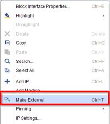
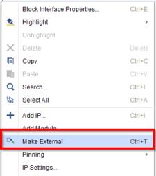
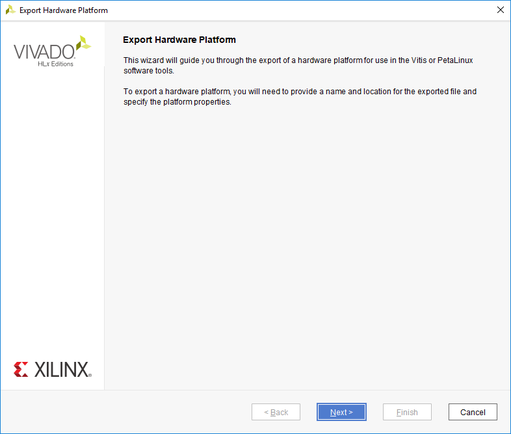
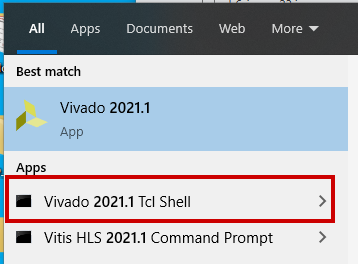

SmartLynq+ モジュールを使用した高速デバッグ ポートのシステム デザイン例¶
入門チュートリル
この章では、SmartLynq+ モジュールと高速デバッグ ポート (HSDP) を利用する Versal® ベースのシステムをビルドする方法について説明します。また、 SmartLynq+ モジュールを設定し、JTAG または HSDP のいずれかを使用して Linux イメージをダウンロードする方法も学習します。
重要
このチュートリアルには、SmartLynq+ モジュール、VCK190 または VMK180 評価ボード、および Linux ホスト コンピューターが必要です。
デザイン例: HSDP のイネーブル¶
HSDP をイネーブルにするには、前の章で構築した VCK190 または VMK180 プロジェクトから開始し、HSDP サポートを含めるようにプロジェクトを変更します。 また、HSDP 対応デザインを作成するために、含まれているブロック デザイン Tcl を実行する手順から、この章を始めることもできます。pl_hsdp を参照してください。
HSDP をイネーブルにするようにデザインを変更¶
このデザインでは、「スカラー型エンジンと適応型エンジンを使用したシステム デザイン例」でビルドしたプロジェクトを使用し、HSDP インターフェイスをイネーブルにします。これには、Vivado™ IP インテグレーターを使用します。
「スカラー型エンジンと適応型エンジンを使用したシステム デザイン例」で作成した Vivado プロジェクトを開きます。
C:/edt/edt_versal/edt_versal.xpr
Flow Navigator の [IP Integrator] → [Open Block Design] をクリックします。

Versal ACAP CIPS IP コアをダブルクリックして、IP を再カスタマイズします。[Next] ボタンをクリックし、PS PMC というラベルの青いボックスをクリックして、プロセッシング システム (PS) およびプラットフォーム管理コントローラー (PMC) をカスタマイズします。左ペインで、[Debug] を選択し、[HSDP] タブをクリックします。
[High-Speed Debug Port (HSDP)] の下の [Pathway to/from Debug Packet Controller (DPC)] を [AURORA] にします。
[GT Selection] を [HSDP1 GT] に、[refclk Selection] を [REFCLK1] に、[GT Refclk Freq (MHz)] を [156.25] に設定します。
注記
ライン レートは 10.0 Gb/s に固定されます。
[OK] をクリックして変更を保存します。CIPS IP 上に 2 つのポート (gt_refclk1 および HSDP1_GT) が作成されます。
[IP Integrator] ページで gt_refclk1 を右クリックし、[Make External] をクリックします。HSDP1_GT も同じように設定します。
 

[Validate Design] をクリックして [Save] をクリックします。
デバイス イメージの合成、インプリメント、生成¶
Flow Navigator で [Program and Debug] → [Generate Device Image] をクリックしてインプリメンテーションを開始します。
デバイス イメージの生成が完了すると、[Device Image Generation Completed] ダイアログ ボックスが開きます。

ハードウェア (XSA) のエクスポート¶
Vivado ツールバーから [File] → [Export] → [Export Hardware] をクリックします。[Export Hardware] ダイアログ ボックスが開きます。
[Fixed] を選択して [Next] をクリックします。
[Include Device Image] を選択し、[Next] をクリックします。
エクスポートするファイルの名前 (例: edt_versal_wrapper_with_hsdp) を指定します。[Next] をクリックします。
[Finish] をクリックします。
PetaLinux を使用した HSDP がイネーブルになった Linux イメージの作成¶
この例では、前の手順でビルドした HSDP がイネーブルになった XSA を使用して PetaLinux プロジェクトを再構築します。PetaLinux プロジェクトは、「スカラー型エンジンと適応型エンジンを使用したシステム デザイン例」に従って作成されたことを前提としています。
重要
前の章で PetaLinux プロジェクトを作成せずにこのチュートリアルを実行する場合は、「サンプル プロジェクト: PetaLinux を使用した Linux イメージの作成」の手順 1 ～ 12 に従って、新しい PetaLinux プロジェクトを作成します。
このサンプル プロジェクトには、Linux ホスト マシンが必要です。PetaLinux ツールの依存関係とインストール手順については、『PetaLinux ツールの資料: リファレンス ガイド』 (UG1144) を参照してください。
次のコマンドを使用して、「サンプル プロジェクト: PetaLinux を使用した Linux イメージの作成」で作成した PetaLinux プロジェクト ディレクトリに移動します。
$ cd led_example
新しいハードウェア プラットフォーム プロジェクトの XSA を、PetaLinux ビルド ルートの 1 つ上のディレクトリにある Linux ホスト マシンにコピーします。
注記
前の手順で生成したアップデート済みの XSA ファイルを使用するようにしてください。
次のコマンドを実行して BSP を再設定します。
$ petalinux-config --get-hw-description=<path till the directory containing the respective xsa file>
次のコマンドを使用して、Linux イメージをビルドします。
$ petalinux-build
ビルドが完了したら、次のコマンドを使用してブート イメージをパッケージにします。
$ petalinux-package --force --boot --atf --u-boot
注記
パッケージされた Linux ブート イメージは、PetaLinux ビルド ルートの
<petaLinux-project>/images/Linux/ディレクトリに含まれます。このディレクトリの場所は、次の手順で使用するため、メモしておいてください。PetaLinux のビルドに使用したマシン (Windows ベースの PC など) とは別のマシンを使用し、SmartLynq+ を使用して Linux ブート イメージをダウンロードする場合は、このチュートリアルに進む前に、このディレクトリの内容をそのマシンに移動しておく必要があります。
SmartLynq+ モジュールの設定¶
Linux イメージがビルドされてパッケージされたら、JTAG または HSDP のいずれかを使用して VCK190 または VMK180 ボードにロードできます。HSDP を使用して接続するように SmartLynq+ モジュールを設定する手順は、次のとおりです。
VCK190 USB-C コネクタと SmartLynq+ モジュールの間を USB-C ケーブルを使用して接続します。

SmartLynq+ をイーサネットまたは USB のいずれかに接続します。
[Using Ethernet]: SmartLynq+ のイーサネット ポートとローカル エリア ネットワーク間をイーサネット ケーブルで接続します。
[Using USB]: SmartLynq+ の USB ポートと PC 間を提供されている USB ケーブルで接続します。
電源アダプターを SmartLynq+ に接続し、VCK190/VMK180 ボードの電源を入れます。
注記
ボードを起動する前に、イーサネット ケーブルをターゲット デバイスに接続してください。
SmartLynq+ の起動が完了すると、eth0 または usb0 の下の画面に IP アドレスが表示されます。この IP アドレスは、イーサネットおよび USB の両方のユース ケースで SmartLynq+ への接続に使用される IP アドレスであるため、メモしておいてください。

注記
イーサネットを使用する場合、SmartLynq+ はネットワーク上で検出された DHCP サーバーから IP アドレスを取得します。USB を使用する場合、USB ポートの IP アドレスは 10.0.0.2 に固定されています。
デザイン パッケージ (
<design-package>/smartlynq_plus/xsdb) から Linux ダウンロード スクリプトをコピーします。
SmartLynq+ をシリアル端末として使用¶
SmartLynq+ は、VCK190 からの UART 出力をリモートで表示するためのシリアル端末としても使用できます。この機能は、リモート設定に物理的なアクセスができない場合に便利です。SmartLynq+ モジュールには、VCK190 上の UART に直接接続するために使用できる minicom アプリケーションが事前にインストールされています。
PuTTY (Windows) や ssh (UNIX ベースのシステム) などの SSH クライアントを使用して、SmartLynq+ ディスプレイに表示される IP アドレスに接続します。
ユーザー名: xilinx
パスワード: xilinx
たとえば、SmartLynq+ に IP アドレス 192.168.0.10 が表示された場合は、ssh xilinx@192.168.0.10 コマンドを実行する必要があります。
デフォルトでは、minicom アプリケーションはハードウェア フロー制御を使用します。ザイリンクス ボード上の UART に正常に接続するには、ハードウェア フロー制御は VCK190 UART で使用されないので、ディスエーブルにする必要があります。このためには、sudo minicom -s を実行して機能をディスエーブルにして、minicom 設定モードにします。または、ルートとして次のコマンドを実行し、minicom のデフォルト設定を変更します。
echo"pu rtscts No"|sudotee-a/etc/minicom/minirc.dfl
最後に、次を実行して VCK190/VMK180 シリアル端末出力に接続します。
sudominicom--device/dev/ttyUSB1
この端末は開いたままにして、次のセクションに進みます。
JTAG または HSDP を介した Linux イメージのブート¶
SmartLynq+ を使用すると、SD カードを使用せずに Linux イメージを VCK190/VMK180 に直接ダウンロードできます。Linux イメージは JTAG または HSDP を使用して読み込むことができます。
このチュートリアルに含まれるデザイン パッケージには、SmartLynq+ モジュールを使用して前のステップで作成した Linux イメージをダウンロードするスクリプトが含まれます。このスクリプトは、JTAG または HSDP のいずれかを使用できます。
SmartLynq+ モジュールにアクセスできるコンピューターで、Vivado Tcl シェルを開きます。
PetaLinux のビルドに使用したコンピューターで作業している場合は、作業ディレクトリを PetaLinux ビルド ルートに変更するか、上記の手順で
images/linuxディレクトリがローカル コンピューターに転送された場所に変更します。Vivado Tcl シェルで次のコマンドを実行し、HSDP を使用してイメージをダウンロードします。
xsdblinux_download.tcl<smartlynq+ip>images/linuxHSDP
これにより、JTAG を介して BOOT.BIN が読み込まれ、HSDP リンクがオート ネゴシエートされ、残りのブート イメージは HSDP を使用して読み込まれます。これにより、JTAG と比較して、速度がかなり速くなります。

注記
また、次のように、スクリプトの最後の引数を FTDI-JTAG に変更することで、Linux イメージを JTAG を介して、xsdb linux-download <smartlynq+ip> images/linux FTDI-jtag にダウンロードすることもできます。これは、JTAG を使用してすべての Linux ブート イメージをプログラムします。HSDP を使用する場合のダウンロード速度の違いに注意してください。
Versal ブート メッセージは、前のセクションで開いた端末の VCK190 UART から表示できます。

JTAG または HSDP のいずれかを使用した Linux の起動が完了すると、次のログイン画面が表示されます。
役に立つリンク¶
サマリ¶
このセクションでは、HSDP を使用し、SmartLynq+ モジュールを接続し、リモート UART アクセス用に SmartLynq+ を設定し、HSDP を使用して Linux イメージをボードにダウンロードするデザインを作成しました。